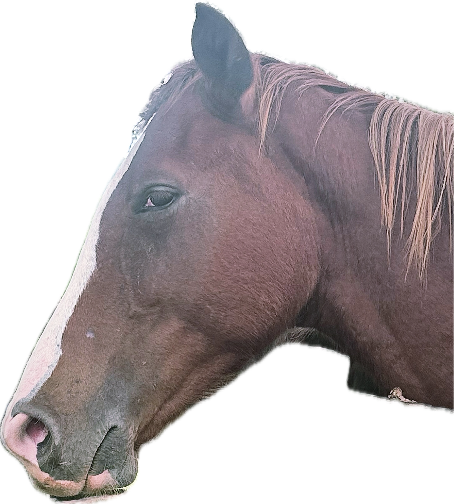

Exploring the World Through Code and Flavor: Introducing Jahzara
Welcome to my blog! I’m Jahzara, I’m 19 years of age currently diving deep into the fascinating world of computer science and Digital Media. My journey in this field has been filled with learning, exploration, and an endless curiosity for technology and innovation.
When I’m not coding or debugging, you can find me enjoying my pescatarian lifestyle, experimenting with delicious seafood recipes, or indulging in my guilty pleasures—Sour Patch Kids and a very cold Ting. I have a love for animals, traveling, and the ocean, which inspire me to appreciate the beauty and complexity of the world around us.
I created this blog to share my insights, experiences, and discoveries in both computer science and life. Whether you’re a fellow tech enthusiast or just here for some sweet treats, I hope you find something that resonates with you.
Let’s embark on this journey together!